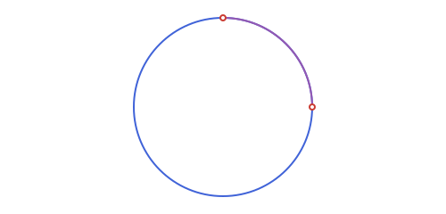
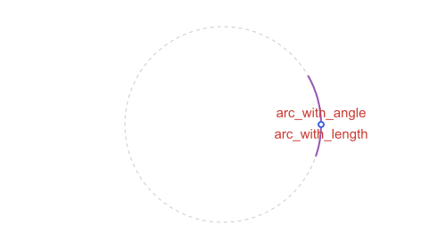
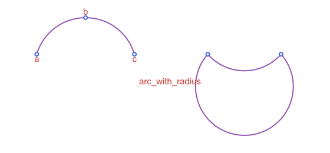

Circles: Arcs
The circle from Circles: Basics:
using Apollonius
c = APCircle2(APPoint(0.0, 0.0), 5.0)Circular arcs
APCircularArc2 is the arc of a circle between two of its points, traversed counterclockwise from the first to the second. Fixing the direction like this is what makes the two points unambiguous, since otherwise there'd be two different arcs (the short way and the long way around) that a bare pair of points couldn't tell apart.
p1, p2 = APPoint(8.0, 0.0), APPoint(0.0, 2.0)
arc = APCircularArc2(c, p1, p2)
measure(arc) # π/2: the swept angle, counterclockwise from p1 to p2
arc_length(arc) # c.r * measure(arc)7.853981633974483point_on(arc, 0.0) ≈ p1 # t=0 is p1, t=1 is p2
midpoint(arc) # point_on(arc, 0.5)[3.5355339059327378, 3.5355339059327373]
APCircularArc2(center, r, p1, p2) builds the same arc straight from the circle's raw center and radius, without an APCircle2 in hand first (APCircularArc2(center, p1, p2), with no r, is the same thing again with r taken to be distance(center, p1)):
APCircularArc2(c.center, c.r, p1, p2) == arctrueSwapping p1 and p2 gives the complementary arc (the other 3/4 of this circle here), not the same arc traversed backwards. APCircularArc2 only ever sweeps counterclockwise, so which points is p1 and which is p2 is exactly what picks one of the two candidate arcs. reverse does exactly that swap:
reverse(arc) == APCircularArc2(c, p2, p1), measure(reverse(arc)) ≈ 2pi - measure(arc)(true, true)This is the fix for a common gotcha: if arc gets built from points that already live in a mirrored coordinate space (e.g. after @prepare_to_picture's default flip=true, see Drawing with Luxor.jl), the "counterclockwise" sweep comes out backwards, since it's computed straight from the (x, y) values with no idea they're mirrored; reverse corrects that after the fact (building the arc before the flip and letting the whole object pass through @prepare_to_picture handles it automatically instead, the same as for APAngle2).
Ellipses have the exact same arc type, APEllipticArc2, and the exact same convention (reverse included); see Conics: Ellipse, Parabola & Hyperbola.
APCircularArc2 is also what interstices (see Tangency & Apollonius Problems) builds a curvilinear triangle's three sides out of.
rand draws a uniformly random point on a circle or a circular arc's own boundary (see Points, Lines & Rays: Special Points & Curves for the general story across every shape); for a full circle or a circular arc this is exact, uniform in arc length, not just in angle or parameter:
p = rand(c)
isapprox(distance(p, c.center), c.r; atol=1e-9) # exactly on the circle, every time
in(rand(arc), arc) # exactly on this arc, not just the full circletrueAn APCircularArc2 also intersects APLine/APSegment/APRay, a full APCircle2, or another circular arc; see Intersecting an arc for the general story (including the arc types below).
APCircularArc2(circle, p1, p2) sweeps counterclockwise from p1 to p2. Swapping the two points gives the complementary arc, and reverse does the same.
Compass arcs
In a ruler-and-compass construction the second end of an arc is rarely a point you already have: you set the compass to a radius and swing it through some measure or distance. arc_with_measure(center, p, m) and arc_with_length(center, p, len) build exactly that: the arc of the circle centered at center through p, starting at p and sweeping a given measure (radians) or arc length. A negative value sweeps clockwise, and since an APCircularArc2 always runs counterclockwise from p1 to p2, that case comes back with p stored as arc.p2:
tick = arc_with_measure(c.center, p1, pi / 6)
measure(tick) ≈ pi / 6, tick.p1 ≈ p1(true, true)back = arc_with_length(c.center, p1, -1.0) # 1 unit of arc length, clockwise
arc_length(back) ≈ 1.0, back.p2 ≈ p1(true, true)When the arc is given by polar angles instead of points, APCircularArc2(center, r, θ1, θ2) builds it from the two angles (counterclockwise by default, ccw=false for clockwise). semicircle(center, p) is the half circle starting at p, and extend_arc(arc, δ) lengthens an arc by δ radians at each end (a negative δ shortens it), always on the same circle:
quarter = APCircularArc2(c.center, c.r, 0.0, pi / 2)
half = semicircle(c.center, p1)
measure(quarter) ≈ pi / 2, measure(half) ≈ pi, measure(extend_arc(quarter, 0.1)) ≈ pi / 2 + 0.2(true, true, true)
compass_trace, the arc centered on a point that a compass leaves on paper, and the constructions built on it are on the Compass & Ruler Constructions page.
Arcs from other data
arc_through_points(a, b, c) is the arc from a to c that passes through b. Arcs run counterclockwise, so when a → b → c goes clockwise the result has c as its first point. arc_with_radius(a, b, r) is the arc of radius r that goes counterclockwise from a to b: the short one by default, and the long one with large=true:
arc_through_points(APPoint(0.0, 0.0), APPoint(2.0, 1.5), APPoint(4.0, 0.0))APCircularArc2(APCircle2([2.0, -0.5833333333333334], 2.0833333333333335), [4.0, 0.0] -> [0.0, 0.0])a_r, b_r = APPoint(7.0, 0.0), APPoint(10.0, 0.0)
measure(arc_with_radius(a_r, b_r, 2.0)), measure(arc_with_radius(a_r, b_r, 2.0; large=true))(1.696124157962962, 4.587061149216624)